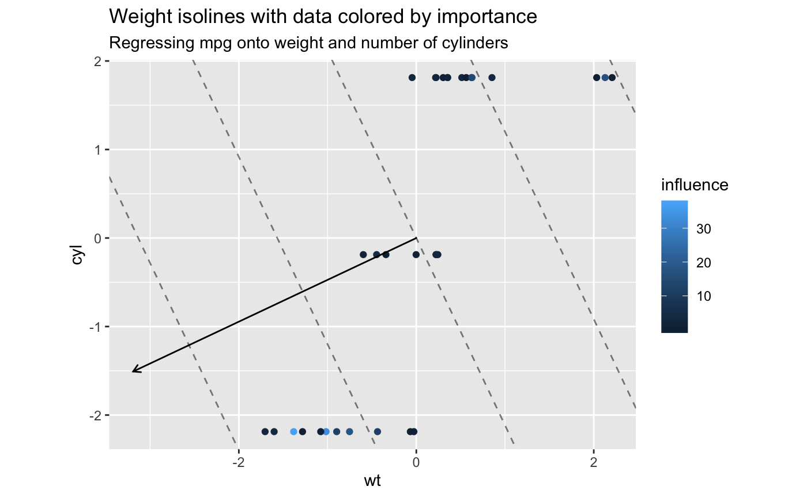
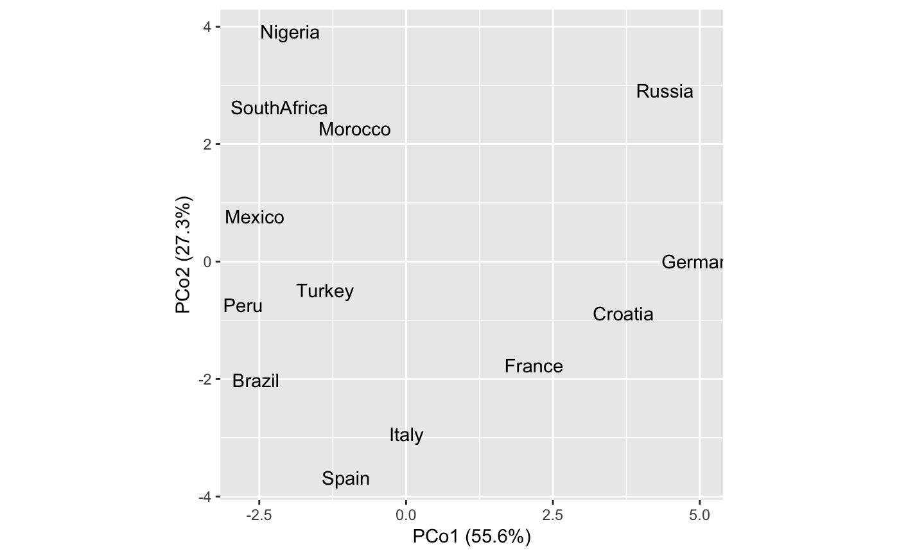
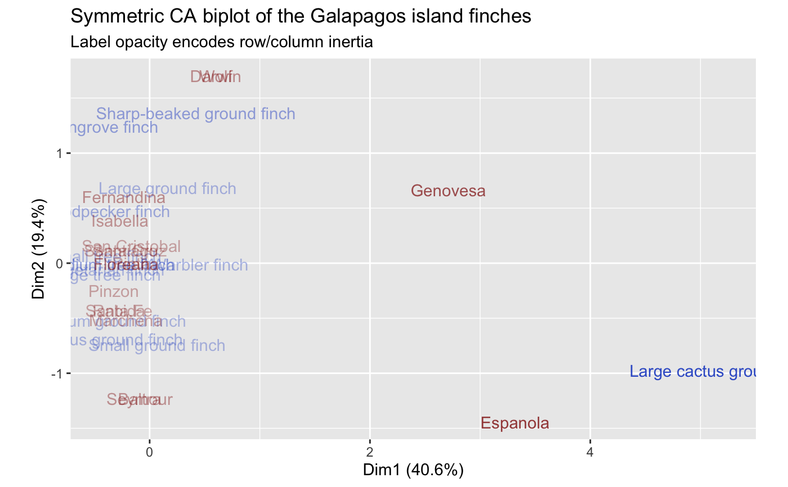
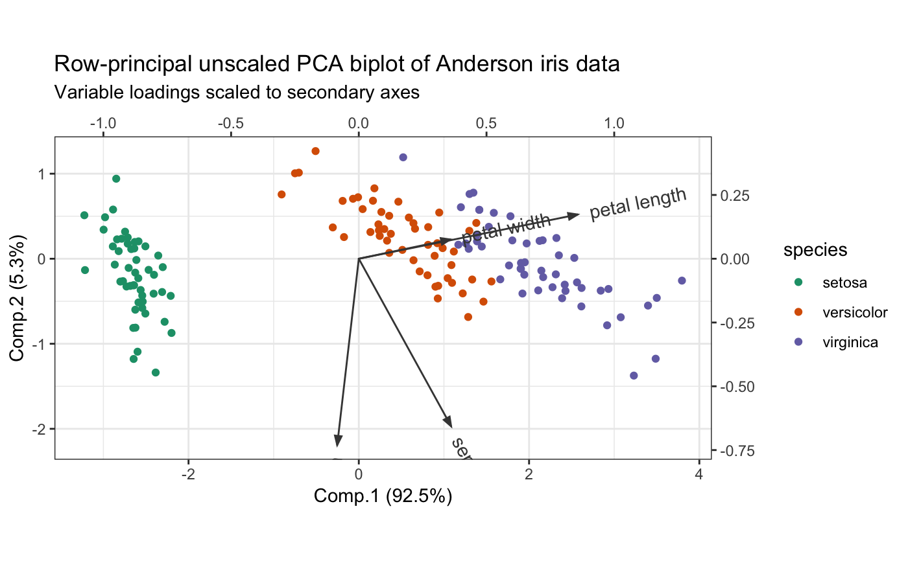

Formatting and printing methods for tbl_ords
formatting.RdFormatting and printing methods for tbl_ords
# S3 method for tbl_ord format(x, ..., n = NULL, width = NULL, n_extra = NULL) # S3 method for tbl_ord print(x, ..., n = NULL, width = NULL, n_extra = NULL)
Arguments
| x | An ordination object. |
|---|---|
| ... | Additional arguments. |
| n | Number of rows to show. If |
| width | Width of text output to generate. This defaults to |
| n_extra | Number of extra columns to print abbreviated information for,
if the width is too small for the entire tibble. If |
Details
The format and print methods for class "tbl_ord"``] are adapted from those for class ["tbl_df"][tibble::tbl_df] and for class ["tbl_graph"`.
Note: The format() function is tedius but cannot be easily modularized
without invoking accessors, annotation, and augmentation multiple
times, thereby significantly reducing performance.
Examples
# Regression analysis of Motor Trend design and performance data mtcars %>% scale(scale = FALSE) %>% as.data.frame() %>% lm(formula = mpg ~ wt + cyl) %>% as_tbl_ord() %>% augment() %>% mutate_u(influence = .wt.res^2) %>% print() -> mtcars_lm#> # A tbl_ord of class 'lm': (32 x 3) x (1 x 3)' #> # 3 coordinates: (Intercept), wt, cyl #> # #> # U: [ 32 x 3 | 8 ] #> `(Intercept)` wt cyl | .name .hat .sigma .cooksd #> | <chr> <dbl> <dbl> <dbl> #> 1 1 -0.597 -0.188 | 1 Mazd… 0.0548 2.60 5.08e-3 #> 2 1 -0.342 -0.188 | 2 Mazd… 0.0376 2.61 4.44e-4 #> 3 1 -0.897 -2.19 | 3 Dats… 0.0798 2.52 5.68e-2 #> 4 1 -0.00225 -0.188 | 4 Horn… 0.0321 2.61 1.80e-3 #> 5 1 0.223 1.81 | 5 Horn… 0.0912 2.58 2.35e-2 #> # … with 27 more rows, and 4 more #> # variables: .wt.res <dbl>, #> # .fit <dbl>, .se.fit <dbl>, #> # influence <dbl> #> # #> # V: [ 1 x 3 | 1 ] #> `(Intercept)` wt cyl | .name #> | <chr> #> 1 6.72e-16 -3.19 -1.51 | 1 mpgmtcars_lm %>% ggbiplot(aes(x = wt, y = cyl)) + geom_u_point(aes(color = influence)) + geom_v_vector() + # weight isolines geom_v_isolines(ids = 1, by = 5) + ggtitle( "Weight isolines with data colored by importance", "Regressing mpg onto weight and number of cylinders" )# Multidimensional scaling of country differences and regression of attributes # Reproduce Exhibit 4.2 in Greenacre (2010) country_differences %>% cmdscale(k = 2) %>% as_tbl_ord() %>% print() -> differences_cmds#> # A tbl_ord of class 'cmds': (13 x 2) x (13 x 2)' #> # 2 coordinates: PCo1 and PCo2 #> # #> # U: [ 13 x 2 | 0 ] #> PCo1 PCo2 | #> | #> 1 0.00781 -2.94 | #> 2 -1.02 -3.68 | #> 3 3.70 -0.883 | #> 4 -2.56 -2.01 | #> 5 4.41 2.91 | #> #> # #> # V: [ 13 x 2 | 0 ] #> PCo1 PCo2 | #> | #> 1 0.00781 -2.94 | #> 2 -1.02 -3.68 | #> 3 3.70 -0.883 | #> 4 -2.56 -2.01 | #> 5 4.41 2.91 | #>differences_plot <- differences_cmds %>% ggbiplot(aes(x = 1, y = 2, label = .name)) + geom_v_text() differences_plot# Reproduce Exhibit 4.5 in Greenacre (2010) lm(country_attributes ~ get_u(differences_cmds)) %>% as_tbl_ord() %>% print() -> attributes_fit#> # A tbl_ord of class 'mlm': (13 x 3) x (6 x 3)' #> # 3 coordinates: (Intercept), PCo1, PCo2 #> # #> # U: [ 13 x 3 | 0 ] #> `(Intercept)` PCo1 PCo2 | #> | #> 1 1 0.00781 -2.94 | #> 2 1 -1.02 -3.68 | #> 3 1 3.70 -0.883 | #> 4 1 -2.56 -2.01 | #> 5 1 4.41 2.91 | #> #> # #> # V: [ 6 x 3 | 0 ] #> `(Intercept)` PCo1 PCo2 | #> | #> 1 5.23 0.423 -0.513 | #> 2 5.69 -0.395 -0.618 | #> 3 6.08 -0.399 -0.645 | #> 4 4. 0.502 -0.444 | #> 5 3.85 0.660 0.0102 | #> 6 4.92 0.627 -0.591 |differences_plot + geom_v_vector(data = attributes_fit) + geom_v_text_radiate(data = attributes_fit, hjust = .3)# Correspondence analysis of Sanderson finches data finches %>% ca::ca() %>% as_tbl_ord() %>% confer_inertia(.5) %>% augment() %>% print() -> finches_ca#> # A tbl_ord of class 'ca': (13 x 12) x (17 x 12)' #> # 12 coordinates: Dim1, Dim2, ..., Dim12 #> # #> # U: [ 13 x 12 | 4 ] #> Dim1 Dim2 Dim3 ... | .name .mass .dist .inertia #> | <chr> <dbl> <dbl> <dbl> #> 1 0.165 0.685 0.320 | 1 Large groun… 0.115 0.573 0.0377 #> 2 -0.368 -0.522 0.0167 ... | 2 Medium grou… 0.107 0.489 0.0255 #> 3 0.0685 -0.743 -0.126 | 3 Small groun… 0.115 0.526 0.0317 #> 4 0.420 1.37 0.417 | 4 Sharp-beake… 0.0820 0.994 0.0810 #> 5 -0.365 -0.691 0.244 | 5 Cactus grou… 0.0984 0.608 0.0364 #> # … with 8 more rows #> # #> # V: [ 17 x 12 | 4 ] #> Dim1 Dim2 Dim3 ... | .name .mass .dist .inertia #> | <chr> <dbl> <dbl> <dbl> #> 1 -0.0909 -1.23 0.274 | 1 Seymour 0.0328 1.10 0.0398 #> 2 -0.0909 -1.23 0.274 ... | 2 Baltra 0.0328 1.10 0.0398 #> 3 -0.269 0.389 -0.783 | 3 Isabella 0.0902 0.657 0.0389 #> 4 -0.233 0.601 -0.933 | 4 Fernandina 0.0820 0.794 0.0517 #> 5 -0.221 0.117 -0.136 | 5 Santiago 0.0820 0.349 0.00998 #> # … with 12 more rowsfinches_ca %>% ggbiplot(aes(label = .name)) + geom_u_text(aes(alpha = .inertia), color = "royalblue3") + geom_v_text(aes(alpha = .inertia), color = "darkred") + scale_alpha_continuous(range = c(.3, 1), guide = "none") + ggtitle( "Symmetric CA biplot of the Galapagos island finches", "Label opacity encodes row/column inertia" )# Unscaled PCA and two-scaled biplot of Anderson iris data iris[, -5] %>% princomp() %>% as_tbl_ord() %>% confer_inertia(1) %>% mutate_u(species = iris$Species) %>% mutate_v(measure = gsub("\\.", " ", tolower(names(iris)[-5]))) %>% print() -> iris_pca#> # A tbl_ord of class 'princomp': (150 x 4) x (4 x 4)' #> # 4 coordinates: Comp.1, Comp.2, ..., Comp.4 #> # #> # U: [ 150 x 4 | 1 ] #> Comp.1 Comp.2 Comp.3 ... | species #> | <fct> #> 1 -2.68 -0.319 -0.0279 | 1 setosa #> 2 -2.71 0.177 -0.210 ... | 2 setosa #> 3 -2.89 0.145 0.0179 | 3 setosa #> 4 -2.75 0.318 0.0316 | 4 setosa #> 5 -2.73 -0.327 0.0901 | 5 setosa #> # … with 145 more rows #> # #> # V: [ 4 x 4 | 1 ] #> Comp.1 Comp.2 Comp.3 ... | measure #> | <chr> #> 1 0.361 -0.657 -0.582 | 1 sepal length #> 2 -0.0845 -0.730 0.598 ... | 2 sepal width #> 3 0.857 0.173 0.0762 | 3 petal length #> 4 0.358 0.0755 0.546 | 4 petal widthiris_pca %>% ggbiplot(aes(color = species), sec.axes = "v", scale.factor = 3) + theme_bw() + scale_color_brewer(type = "qual", palette = 2) + geom_u_point() + geom_v_vector(color = "#444444") + geom_v_text_radiate(aes(label = measure), color = "#444444") + ggtitle( "Row-principal unscaled PCA biplot of Anderson iris data", "Variable loadings scaled to secondary axes" )